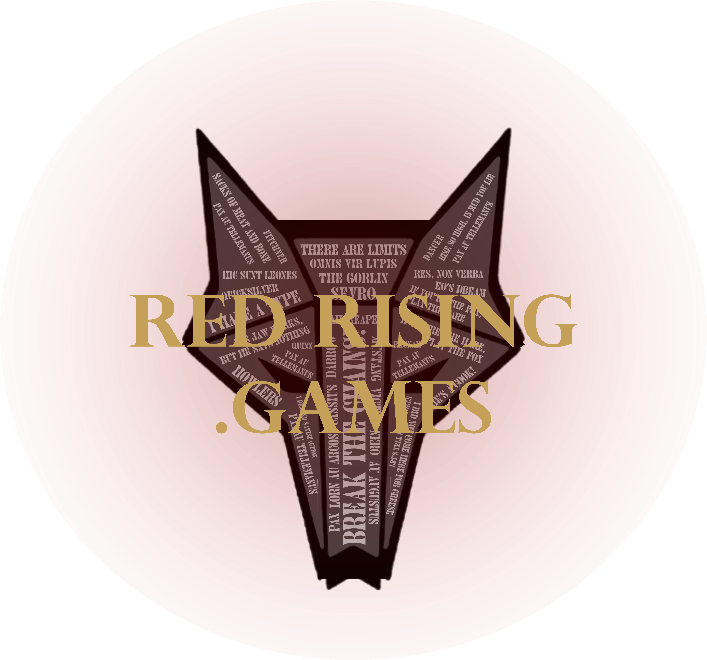

Browse selected work
Design built around people.
Digital products, websites, storefronts, and interactive experiences from Synaptech Design Solutions.

Product and AI
TonaliQ
Audio-grounded feedback for independent producers working on their own mixes.

Custom software
BYU Move
Registration, participant self-service, mentor workflows, and administrative operations.
Web design
design.byu.edu
A web home for BYU’s Design Exploration research group.

Graphic design
The Decal Company
Graphic design work developed for The Decal Company.

Interactive
redrising.games
An unofficial fan project with browser-based quizzes, simulations, and community tools.